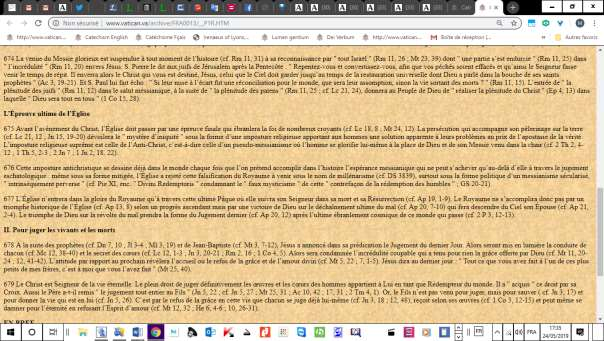
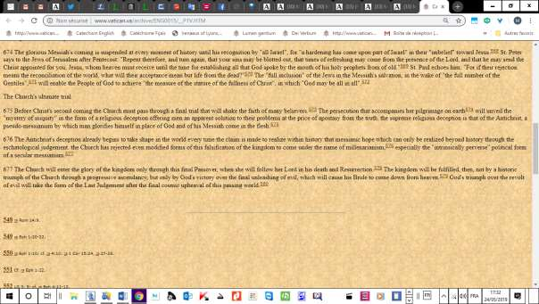

Celles et ceux qui suivent mes publications sur Ac 3, 21 et mes analyses du terme grec Apocatastasis que ce verset contient (voir la section de mon compte Internet sur le site Academia.edu, intitulée « Apocatastase »), s’étonneront sans doute de ce que les textes français et anglais du passage du Catéchisme de l’Eglise Catholique, où est cité ce verset, diffèrent totalement l’un de l’autre. Cette différence d’interprétation ayant une incidence sur la doctrine de la foi catholique, il m’a paru nécessaire de mettre ce fait en exergue, à l’attention des théologiens et biblistes compétents En attendant qu’un spécialiste propose une explication de ce phénomène, on lira, ci-après, les deux versions (française et anglaise) du paragraphe du Catéchisme où elles figurent sur le site du Vatican:
La venue du Messie glorieux est suspendue à tout moment de l’histoire (cf. Rm 11, 31) à sa reconnaissance par "tout Israël" (Rm 11, 26; Mt 23, 39) dont "une partie s’est endurcie" (Rm 11, 25) dans "l’incrédulité" (Rm 11, 20) envers Jésus. S. Pierre le dit aux juifs de Jérusalem après la Pentecôte: "Repentez-vous et convertissez-vous, afin que vos péchés soient effacés et qu’ainsi le Seigneur fasse venir le temps de répit. Il enverra alors le Christ qui vous est destiné, Jésus, celui que le Ciel doit garder jusqu’au temps de la restauration universelle dont Dieu a parlé dans la bouche de ses saints prophètes" (Ac 3, 19-21). Et S. Paul lui fait écho: "Si leur mise à l’écart fut une réconciliation pour le monde, que sera leur assomption, sinon la vie sortant des morts?" (Rm 11, 15). L’entrée de "la plénitude des juifs" (Rm 11, 12) dans le salut messianique, à la suite de "la plénitude des païens" (Rm 11, 25; cf. Lc 21, 24), donnera au Peuple de Dieu de "réaliser la plénitude du Christ" (Ep 4, 13) dans laquelle "Dieu sera tout en tous" (1 Co 15, 28).

The glorious Messiah's coming is suspended at every moment of history until his recognition by "all Israel", for "a hardening has come upon part of Israel" in their "unbelief" toward Jesus. St. Peter says to the Jews of Jerusalem after Pentecost: "Repent therefore, and turn again, that your sins may be blotted out, that times of refreshing may come from the presence of the Lord, and that he may send the Christ appointed for you, Jesus, whom heaven must receive until the time for establishing all that God spoke by the mouth of his holy prophets from of old" St. Paul echoes him: "For if their rejection means the reconciliation of the world, what will their acceptance mean but life from the dead?" The "full inclusion" of the Jews in the Messiah's salvation, in the wake of "the full number of the Gentiles", will enable the People of God to achieve "the measure of the stature of the fullness of Christ", in which "God may be all in all".

Texte mis en ligne sur le site Academia.edu, le 14 octobre 2017; mise à jour du 24 mai 2019